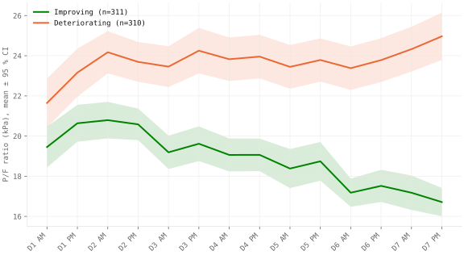
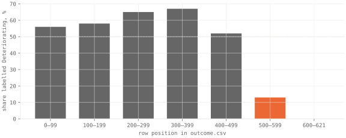
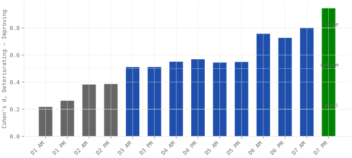

Note · 14 September 2026 · coursework, an ICU P/F-ratio dataset
Reversed outcome labels in an ICU P/F-ratio dataset (coursework)
A methods note on a course assignment whose outcome labels point the wrong way: how the direction was checked, how cleaning rules delete by class, and why three classifiers could not be separated.
- patients · readings each
- 622 · 14 311 vs 311 by label · administrative count, course-supplied
- variables pointing the reversed way
- 9 of 10 the tenth is mis-scaled · count
- readings capped by winsorising
- 97 of 8 694 1.12 %, no patient deleted · count
- nested CV accuracy, three classifiers
- 0.70–0.74 ± 0.03–0.05, fold SD · baseline 0.50
Overwhelmed? Here's the short version
- The patients labelled Deteriorating have the higher and rising oxygenation, and realigning the label file by up to 30 rows in either direction does not restore the expected sign, so a simple offset is ruled out; mislabelling or a deliberately altered teaching set remain.
- The textbook outlier rule would have removed about a fifth of the patients, two-thirds of them from one class, while leaving accuracy almost unchanged.
- Once hyperparameter search sits inside the cross-validation and the resampled comparison is corrected for overlapping training sets, no classifier is better than another.
- Nothing here is clinical evidence: the dataset is not public, its source study is not named, the labels are known to be wrong, and only one variable was modelled.
Photo: Ismael Olea · CC BY 4.0, colour held

The dataset and the direction of its labels
The assignment, for a course on the analysis of complex data at Universität Bayreuth, asked for an outcome to be predicted from one physiological variable, and it describes the data as recreating a COVID-19 study of emergency care. The course materials do not name that study or say whether the records are real, perturbed or synthetic, and the files are not public, so every statement below rests on private material1. The assigned variable was the P/F ratio, PaO2/FiO2 in kPa, the oxygenation measure used to grade acute respiratory distress syndrome2. The data hold 622 patients with fourteen readings each, twice a day over seven days, and one label, balanced at 311 Improving and 311 Deteriorating. Neither file carries an identifier, so position is the only link between readings and label. There are no missing values, and one record, patient 84, holds 22.166667 at all fourteen timepoints, which is how a single value carried forward looks; that record was removed, and it suggests that at least some values were filled upstream.
A higher P/F ratio means better oxygenation. Here the group labelled Deteriorating has the higher mean, 23.8 against 18.9 kPa, and the rising trend, +0.11 against −0.29 kPa per half-day. Against the same label file, eight of the other nine variables in the course set (CRP, lactate, peak pressure, PaCO2, oxygen saturation, pH, bicarbonate, platelets) also describe the Deteriorating patients as the healthier ones. The tenth, ventilatory ratio, sits around 1 300 for a quantity that should be near 1–3, so that file is mis-scaled. The nine variables share one cohort, so this is one observation made nine ways, not nine replications1.

tools/figures/icu_figures.py; matches the report.Testing for a shifted label file
A random shuffle of the labels would erase the signal rather than reverse it, but a label file shifted against the readings could reverse it, so the row order was tested. A Wald–Wolfowitz runs test on the label column gives 241 runs against an expected 312 ± 12.5 (z = −5.66)3. The non-randomness sits at the end of the file. The first 500 rows are in random order (z = −0.44), and near row 500 the Deteriorating share drops from 59.6 % to 10.7 %.

If the files were offset, realigning them should strengthen the association. Across offsets from −30 to +30 rows, the group difference is largest at zero (t = +8.84), the nearest competitor is less than half as large, and no offset gives a significant difference in the clinically expected direction. That rules out a simple offset of up to 30 rows. It does not distinguish mislabelling in the source from a teaching dataset that was altered on purpose, and both remain open. The row-order changepoint affects nothing downstream, because the train–test split is stratified and shuffled1.
Cleaning and the comparison of classifiers
The P/F ratio is right-skewed at every timepoint (mean absolute skew 1.75, 0.24 on the log scale). On data this skewed, Tukey's lower fence falls below the minimum, so only the upper fence binds, and it cuts through a smoothly decaying tail. Applied to raw values, the rule flags 128 patients, 85 of them Deteriorating, because that is the higher-valued class. The table shows that accuracy spans 0.018 across five strategies, against a fold-to-fold standard deviation of about 0.04, so it cannot choose among them; the choice turns on who is deleted. The primary dataset winsorises at log-scale fences instead, deleting nobody. The report measured the leakage from fitting the fences on the whole dataset: refitting them inside each fold moved SVC accuracy from 0.7681 to 0.7679. That check used a different evaluation from the table, and the report does not record its split or hyperparameters1.
| strategy | removed | n left | Impr. / Deter. | accuracy |
|---|---|---|---|---|
| keep everything | 0 | 621 | 311 / 310 | 0.726 |
| drop, IQR k = 1.5, raw | 128 | 493 | 268 / 225 | 0.718 |
| drop, IQR k = 3.0, raw | 40 | 581 | 296 / 285 | 0.733 |
| drop, IQR k = 1.5, log | 57 | 564 | 291 / 273 | 0.736 |
| winsorise, IQR k = 1.5, log | 0 | 621 | 311 / 310 | 0.723 |
The gap between the labelled groups widens over the week. Cohen's d rises from 0.22 on the first morning to 0.95 on the seventh evening4, and all fourteen timepoints differ after Benjamini–Hochberg correction5, which at n = 621 says little on its own.

Logistic regression, an RBF support vector classifier and a random forest were fitted on one stratified 80/20 split. On the 125 test patients the forest scores 0.792, the SVC 0.776 and logistic regression 0.736, against a baseline of 0.504. Because the three share a test set, McNemar's exact test applies, and it separates no pair (p = 0.44, 0.14, 0.83)6. Scoring a tuned model by cross-validation on data that chose its hyperparameters is optimistic, so the whole grid search was nested inside each outer fold7. That costs the SVC 0.028, the forest 0.009 and logistic regression 0.006, and with the Nadeau–Bengio correction for overlapping training sets the pairwise p-values are 0.26, 0.22 and 0.608.
| classifier | test, default | test, tuned | grid CV (biased) | nested CV | ROC AUC |
|---|---|---|---|---|---|
| logistic regression, C = 0.01 | 0.728 | 0.736 | 0.698 ± 0.032 | 0.700 ± 0.031 | 0.809 |
| SVC (RBF), C = 10, γ = 0.5 | 0.760 | 0.776 | 0.762 ± 0.037 | 0.739 ± 0.052 | 0.806 |
| random forest, depth 10, 300 trees | 0.776 | 0.792 | 0.726 ± 0.041 | 0.725 ± 0.046 | 0.852 |
If the labels were correct, logistic regression would be the model to report: rerunning everything on the row-deleted dataset moves it by 0.001, against 0.033 for the SVC and 0.049 for the forest, and its selection optimism is the smallest. For ranking patients at a tuned threshold the forest's AUC of 0.852 against 0.809 would favour the forest. With the labels as they are, the report concludes that nothing built on this dataset should be deployed. The analysis is limited to one of the ten variables, rests on labels known to be wrong, takes its test-set figures from a single 80/20 split, has no external validation, and uses a dataset nobody outside the course can inspect1.
References
- Šandová, B. (2026). Predicting COVID-19 Treatment Outcomes from Seven Days of P/F Ratio Measurements. Semester assignment, Analysis & Modelling of Complex Data (Prof. A. Faisal, Dr. C. Auepanwiriyakul), Universität Bayreuth, 30 August 2026. bsandova.com/assets/icu/report.pdf. Dataset: course-supplied CSVs, not public (private; not verifiable).
- ARDS Definition Task Force (2012). Acute respiratory distress syndrome: the Berlin Definition. JAMA 307(23), 2526–2533. doi.org/10.1001/jama.2012.5669. Accessed 29 September 2026.
- Wald, A. and Wolfowitz, J. (1940). On a test whether two samples are from the same population. Annals of Mathematical Statistics 11(2), 147–162. doi.org/10.1214/aoms/1177731909. Accessed 29 September 2026.
- Cohen, J. (1988). Statistical Power Analysis for the Behavioral Sciences, 2nd ed. Lawrence Erlbaum.
- Benjamini, Y. and Hochberg, Y. (1995). Controlling the false discovery rate: a practical and powerful approach to multiple testing. Journal of the Royal Statistical Society, Series B 57(1), 289–300. doi.org/10.1111/j.2517-6161.1995.tb02031.x. Accessed 29 September 2026.
- McNemar, Q. (1947). Note on the sampling error of the difference between correlated proportions or percentages. Psychometrika 12(2), 153–157. doi.org/10.1007/BF02295996. Accessed 29 September 2026.
- Hastie, T., Tibshirani, R. and Friedman, J. (2009). The Elements of Statistical Learning, 2nd ed., §7.10.2. Springer. hastie.su.domains/ElemStatLearn. Accessed 29 September 2026.
- Nadeau, C. and Bengio, Y. (2003). Inference for the generalization error. Machine Learning 52, 239–281. doi.org/10.1023/A:1024068626366. Accessed 29 September 2026.
Change log
- 14 September 2026: first published as "The label says deteriorating. The patient is getting better."
- 29 September 2026, version 2: moved to Notes and retitled as a methods note. The page description said ten variables agree; it is nine of ten. The fig. 3 caption now names the rendered colours (grey below 0.5, blue medium, green large); it said "blue: medium and above; green: large". The 0.7681 → 0.7679 leakage check is now marked as a different evaluation from the cleaning table's 0.723, as the report does not record its setting. "Rules out misalignment" narrowed to a simple offset of up to 30 rows, with an altered teaching set named as an open explanation. Patient 84 is described as evidence that some values were filled, not as proof of imputation. "The model I would deploy" replaced by what would be reported if the labels were correct, with the report's own conclusion against deployment. The Tukey sentence corrected: on skewed data the lower fence falls below the minimum. Added the Berlin definition, Wald–Wolfowitz, Cohen, Benjamini–Hochberg and McNemar as primary references, split Hastie et al. and Nadeau–Bengio into separate entries (Nadeau–Bengio page range 239–281 added), and renumbered. Added the dataset's provenance as far as known, the private-data statement and a limits sentence. Cut the section of lessons, the two closing lines on the ranking and on the report, the paragraph on regularisation and summary features (C = 10 and C = 0.01 coefficients −0.33 to +0.20; +0.014, −0.007, +0.001), the paragraph on the SVC grid and forest importances (0.623 to 0.762, range 0.139; ρ = 0.49, p = 0.078), the correlation structure of the timepoints (r = 0.71 decaying to 0.38; mean correlation 0.21 and about eight independent tests), the per-group trajectories (20.0 to 16.9 and 22.4 to 24.6 kPa), the 57-patient winsorising count, the 43 Improving patients the raw rule deletes (128 less 85), the "66.5/3" arithmetic, the report's length (18 pages), "p < 0.001", the "4.3×" ratio and the footer note that repeated the captions. The short version no longer repeats the deck or the facts.
- Checked against editorial standard v1 on 29 September 2026.